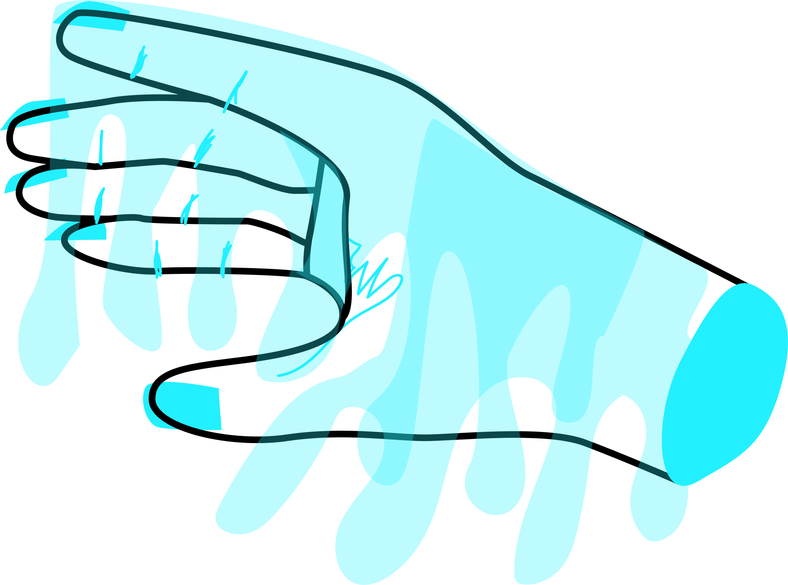

A month-long experiment to improve how I draw hands and how I work with CSS Grid, based on prompts from Jake Parker's Inktober 2018. I'm further limiting his prompts to hands, which I find expressive and yet difficult to draw. As I've not always felt confident in my illustration skills, I am intersecting these fears and desires. See more on my Dribbble.
Inktober


